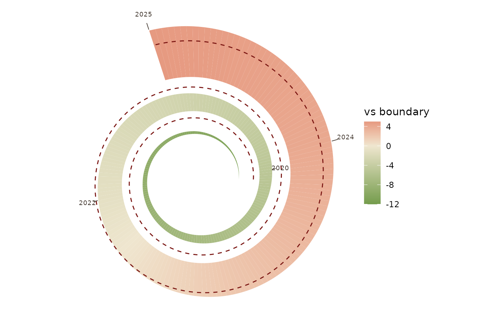

Conch: the boundary trajectory wound into a spiral (expressive companion)
Source:R/conch.R
spiral_boundary.RdA log-spiral where the winding encodes time. A value trajectory grows
radially from the base spiral and a boundary (a scalar ceiling, or a full
series for a moving boundary) is drawn as a dashed ring; where the ribbon
pushes past it the system is in overshoot.
Arguments
- ...
for
conch(), arguments passed on tospiral_boundary().- time
numeric vector (e.g. years).
- value
numeric vector, same length as
time.- boundary
scalar or vector (same length as
time) giving the ceiling. Pass a vector to express a boundary that itself moves over time.- turns
number of spiral revolutions across the series.
- per_turn
radial growth factor per revolution.
- amp
radial amplitude of the value ribbon (fraction of local radius).
- pal
fill gradient for the value ribbon.
- show_years
logical; draw year markers along the spiral (default TRUE).
- n_labels
approximate number of markers.
- min_label_frac
drop markers whose radius is below this fraction of the outermost radius, so the crammed inner whorls stay unlabelled (default 0.4).
- label_fmt
function applied to marker values before drawing; the default rounds to one decimal. For strictly yearly data pass
round.- title
optional plot title.
Details
This is deliberately an expressive view, kept for communication, covers,
and physical data objects, not an analytical instrument. In head-to-head
tests on real tourism data a line chart beats it on magnitude, timing, and
rate, and a month-by-year heatmap beats it on the phase-plus-trend read that
is the spiral's own supposed niche. Reach for geom_boundary() when the job
is to see the data; reach for the conch when the job is to make the
boundary idea memorable, and pair the two honestly.
Examples
conch(time = 2016:2025,
value = c(38,40,41,43,45,47,49,52,54,55),
boundary = 50, label_fmt = round)
